הורדתן מאתר רשמי קובץ לכל שנה. בכל אחד קצת אחרת: עמודה שנוספה, שם שהשתנה, רשות שאוחדה. הנספח הזה מראה איך מאחדות את כולם לטבלה אחת, ומה מחליטות כשהשנים לא בדקו בדיוק אותו דבר.
שאלה
←
איסוף נתונים
←
טיוב והכנה
←
ניתוח
←
הצגה
←
החלטה
לפני שמאחדות: שלוש שאלות
אולי כבר יש קובץ אחד עם עמודת שנה? אתרים רבים מפרסמים, לצד הקבצים השנתיים, גם קובץ ״כל השנים״. אם יש, לוקחות אותו ומסננות לשנים שצריך. הנספח הזה לא בשבילכן.
השאלה שלכן צריכה עוד שורות, או עוד עמודות?
עוד שורות: אותן עמודות, עוד שנים. כל שורה היא ״רשות בשנה מסוימת״. זה Append, והוא הנספח הזה.
עוד עמודות: אותה רשות או אותו שיר, ושתי השנים זו ליד זו, כדי לחשב כמה השתנה. זה Merge, ונלמד בשיעור המודל.
כמה קבצים? שניים עד שישה: Append, כמו כאן. עשרות קבצים במבנה זהה לגמרי: יש דרך אחרת, בסוף הדף.
הדרך
מתי
כאן?
קובץ ״כל השנים״ מהמקור
המקור כבר מציע אותו
שאלה 1. אין מה לאחד
Append Queries as New
2–6 קבצים, וכל שנה קצת אחרת
הדרך הראשית
Folder › Combine
הרבה קבצים, זהים במבנה
בסוף הדף, ולמה היא מסוכנת כשהמבנה שונה
העתק־הדבק באקסל
אף פעם
מדביק לפי מיקום העמודה, לא לפי השם, ולא נשאר ממנו תיעוד
הדרך: קודם מאחדות, ואז מסתכלות מה השתבש. פאוור BI יראה לכן בפרופיל כל עמודה שלא מתאימה בין השנים. לא צריך לגלות את זה לבד מראש.
ואז מתקנות במקום הנכון: בעיות מבנה (שם של עמודה, עמודת שנה) מתקנות בשאילתה של אותה שנה. בעיות ערכים (סוגים, ריקות, איות) מתקנות פעם אחת, בטבלה המאוחדת.
שלב 1 · על קובצי התרגולמאחדות שלוש שנים
קובץ פאוור BI חדש. כל קובץ שנתי נכנס כשאילתה משלו, ומאחדות מיד.
1.1שלוש שאילתות, אחת לכל שנה
בחלונית Queries שלוש שאילתות: 2022, 2023, 2024. בכולן הכותרות נכונות.
שלוש שנים של ״רשויות מקומיות״. הנתונים מומצאים, אבל כל הבדל בהם לקוח ממסדים אמיתיים.
מעבירות את שלושתם לתיקייה אחת, למשל Power BI\איחוד שנים.
איך עושים
Home › Excel workbook ← רשויות 2022 ← מסמנות את הגיליון ← Transform Data.
בפאוור קוורי: Home › New Source › Excel Workbook ← רשויות 2023 ← הגיליון ← OK.
אותו דבר עם רשויות 2024. כאן הכותרות לא נכונות:
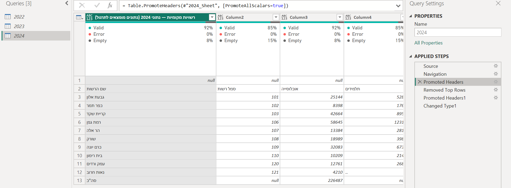
הכותרת האמיתית בשורה 2, ושורה 1 ריקה.
ב־2024: Home › Remove Rows › Remove Top Rows ← 1 ← OK. ואז Home › Use First Row as Headers.
מה אמור להופיע?
2022: 10 שורות. 2023: 9 שורות. 2024: 11 שורות, עם שם הרשות, סמל רשות, אוכלוסייה וכן הלאה בכותרות.
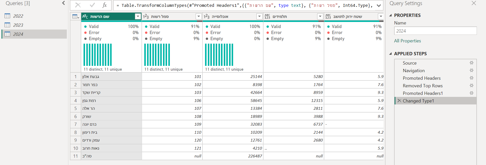
הכותרות נכונות. משאירות את הקובץ כמו שהוא, ועוברות לאיחוד.
למה רק את זה מתקנות עכשיו? בלי כותרות אי אפשר לקרוא את הקובץ, וגם האיחוד לא יבין אותו. את כל השאר נגלה אחרי האיחוד.
1.2מאחדות
שאילתה חדשה, Append1, ובה השורות של שלוש השנים.
איך עושים
Home › Append Queries ← החץ הקטן ← Append Queries as New.
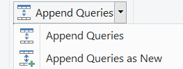
as New: נוצרת שאילתה חדשה, והשנתיות לא נוגעות.
Three or more tables. מוסיפות את 2022, 2023, 2024 (Add >>), ומסדרות בחצים לפי הסדר.
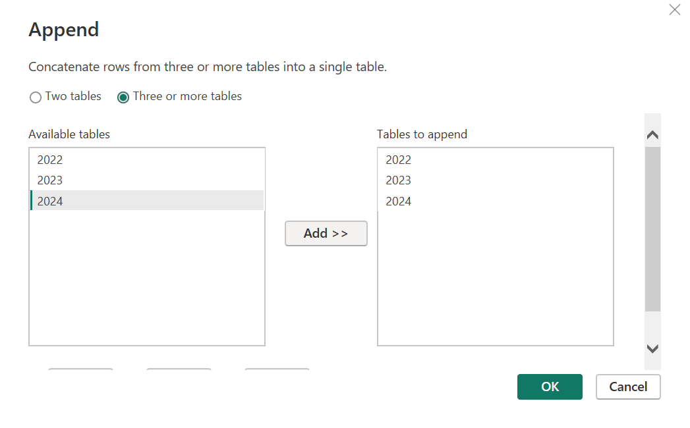
OK. נוספה שאילתה Append1.
מה אמור להופיע?
למטה: 10 COLUMNS, 30 ROWS. 10 + 9 + 11 = 30, כל השורות נכנסו.
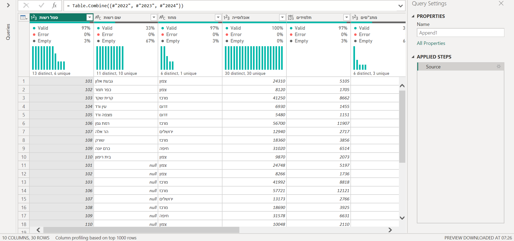
זה עבד? כמעט. בכל קובץ 7 עמודות. באיחוד 10. מאיפה הגיעו שלוש עמודות נוספות? זה השלב הבא.
שלב 2 · קוראות את הפרופילמה השתבש, ולמה
כל נושא כאן בנוי אותו דבר: מה רואות בפרופיל, למה זה קרה, איפה מתקנות. ואחרי כל תיקון: שורה בטבלת הטיוב שלכן.
2.1איך קוראים את האיחוד
יודעות לזהות בפרופיל עמודה שהגיעה רק מחלק מהקבצים.
מוודאות ש־Column quality ו־Column profile דלוקים (View, כמו בשיעור 2) ושלמטה כתוב entire data set. גוללות ימינה עד הסוף.
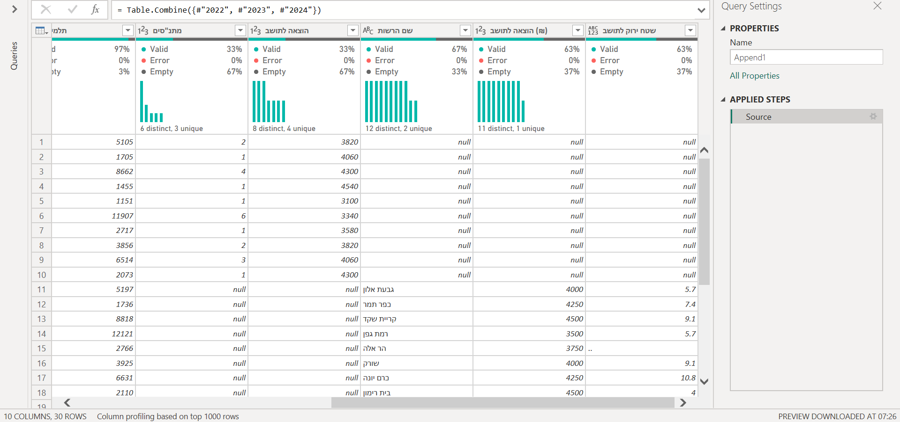
״מדרגות״: עמודות שמלאות רק בחלק מהשורות. 33% = 10 שורות מתוך 30 = שנה אחת.
בפרופיל
מה זה אומר
מלאה ב־100%
העמודה הגיעה מכל הקבצים, באותו שם בדיוק.
מלאה ב־33% בערך
רק מ־2022 (10 שורות מתוך 30).
מלאה ב־67% בערך
רק מ־2023 ו־2024 (20 שורות מתוך 30).
עמודה שאמורה להיות מלאה תמיד, וחסרה בה שורה
שורה אחת שהיא לא כמו האחרות.
למה יש מדרגות?Append מחבר עמודות לפי השם המדויק, לא לפי המיקום. שם שונה, אפילו ברווח אחד, הוא עמודה אחרת. בשורות של השנים שאין בהן את השם הזה, העמודה מקבלת null.
2.2שורה שאינה רשות
ב־Append1 אין שורת סה״כ: 29 שורות, וסמל רשות מלא ב־100%.
מה רואות: בסמל רשותEmpty 3%. לכל רשות יש סמל, אז שורה בלי סמל היא לא רשות. גוללות למטה:
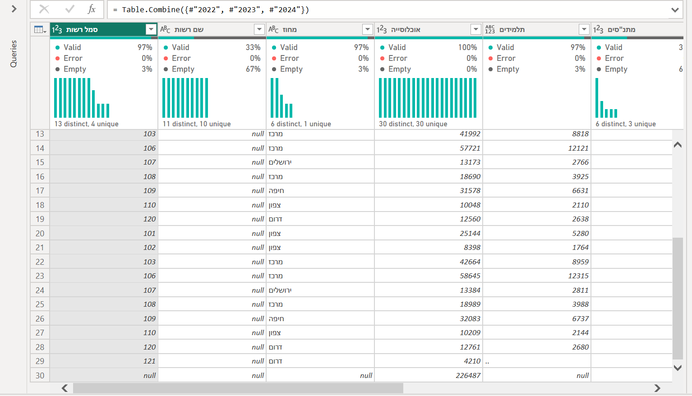
שורה 30: בלי סמל, בלי מחוז, ואוכלוסייה של 226,487. גוללות ימינה: בשם הרשות כתוב ״סה״כ״. זו שורת הסיכום של 2024.איך מתקנות
ב־Append1: החץ בכותרת סמל רשות ← Remove Empty.
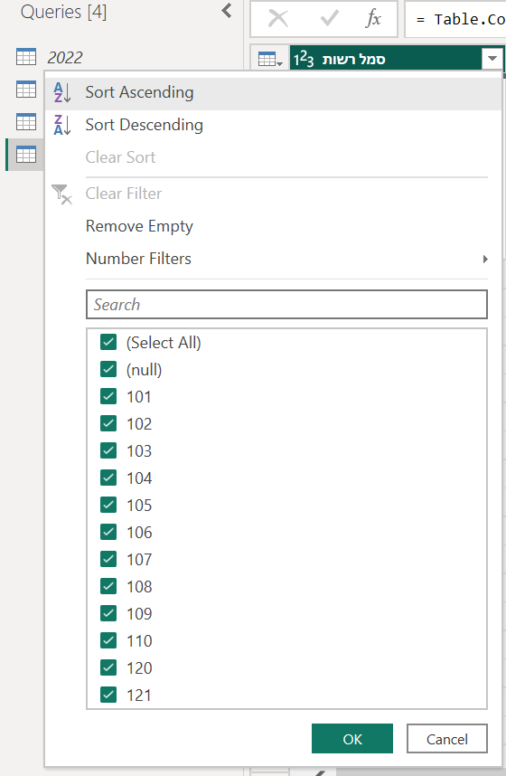
גם ברשימה רואות (null). זו השורה.
מה אמור להופיע?29 שורות. ביומן: Filtered Rows. עכשיו המדרגות נקיות: 34% ו־66%. לפני כן חלק מהן היו 63%, כי גם בשורת הסה״כ חסרו ערכים.
שורת סה״כ שנשארת מכפילה כל סכום. היא נראית כמו עוד ״רשות״. בקבצים אמיתיים יש לפעמים כמה כאלה, גם באמצע (סה״כ מחוז). הסינון על עמודת המפתח מנקה את כולן בבת אחת, בכל השנים.
2.3עמודה אחת, חצויה לשתיים
ב־Append1 8 עמודות, ושם הרשות מלאה ב־100%. ולא נגעתן ב־Append1.
מה רואות: שם רשות 34%, ושם הרשות 66%. ביחד 100%. שתי עמודות שמשלימות זו את זו ל־100% חשודות כאותה עמודה בשני שמות. מחפשות עוד זוג כזה: הוצאה לתושב 34%, והוצאה לתושב (₪) 66%.
חשודה זה לא אשמה: גם מתנ״סים (34%) ושטח ירוק (66%) משלימות ל־100%, אבל הן לא אותו דבר. רק המשמעות מחליטה. ומה איתן? בנושא הבא.
איך מתקנות
קליק על 2022 בחלונית Queries. מתקנות בשאילתה של השנה, לא באיחוד.
מסמנות את שם רשות, F2, ומקלידות שם הרשות.
מסמנות את הוצאה לתושב, F2, ומקלידות הוצאה לתושב (₪). כולל הרווח והסוגריים.
קליק על Append1.
מה אמור להופיע?
ב־Append1: 8 עמודות, ושם הרשות מלאה ב־100%. מתנ״סים ושטח ירוק עדיין במדרגות.
התיקון היה בשאילתה של 2022, והאיחוד התעדכן לבד.Append1 לא מחזיק עותק של הנתונים. הוא שואל את שלוש השאילתות בכל פעם מחדש, כמו Reference משיעור 5.
איזה שם בוחרות? בדרך כלל של השנה האחרונה, ומשנות אליו בשאר השנים.
2.4עמודה שקיימת רק בחלק מהשנים
החלטתן מה עושים עם מתנ״סים ועם שטח ירוק, וכתבתן למה.
מה רואות: מתנ״סים מלאה רק ב־2022. שטח ירוק רק ב־2023 ו־2024. אין להן בת זוג: פשוט לא נמדדו בכל השנים.
שלוש אפשרויות, לפי השאלה:
רק המשותפות: מסירות כל עמודה שלא קיימת בכל השנים. טבלה נקייה, אבל מאבדות מידע.
הכול: משאירות. בשנים שבהן העמודה לא נמדדה יופיע null, וכותבות ש־null כאן הוא ״לא נמדד״ ולא ״ריק״.
בררני, וזו ההמלצה: המשותפות, ועוד מה שהשאלה צריכה. ניתוח על עמודה כזו נעשה רק על השנים שבהן היא קיימת, וכותבות את זה.
בקובצי התרגול: משאירות את שתיהן.
2.5מאיזו שנה השורה הזו?
בכל שאילתה שנתית עמודה שנה, מסוג מספר שלם. ב־Append1: 9 עמודות, 29 שורות.
מה רואות: שורה 11 ב־Append1 היא גבעת אלון. של איזו שנה? אין דרך לדעת.
איך מתקנות
קליק על 2022. Add Column › Custom Column.
ב־New column name: שנה. בנוסחה, אחרי ה־= שכבר שם: 2022. OK.
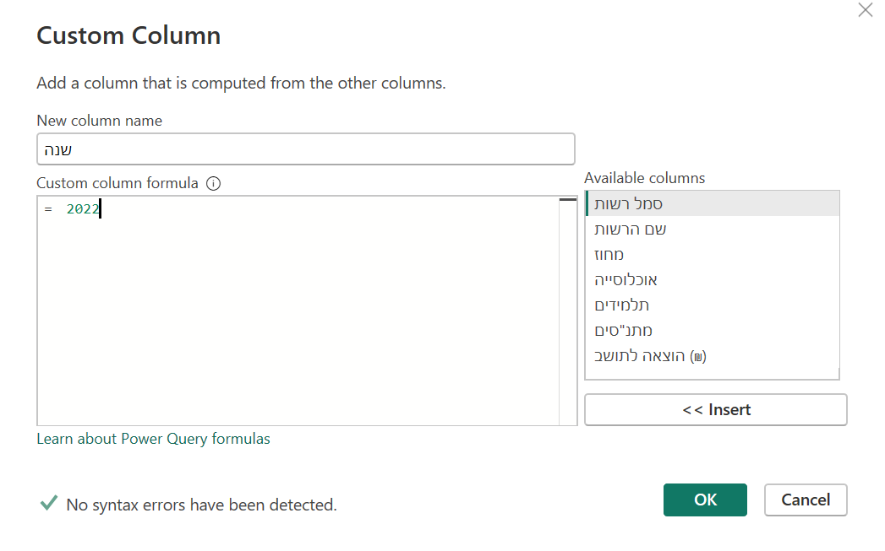
מספר בלי מרכאות. "2022" עם מרכאות יהיה טקסט.
האייקון בכותרת שנה הוא ABC/123. קליק עליו ← Whole Number.
אותו דבר ב־2023 (עם 2023) וב־2024 (עם 2024).
קליק על Append1.
מה אמור להופיע?9 עמודות, 29 שורות. סמל רשות ושם הרשות מלאות ב־100%.
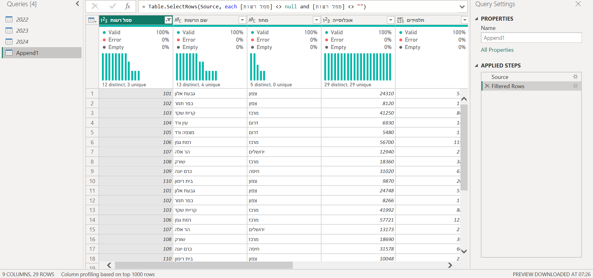
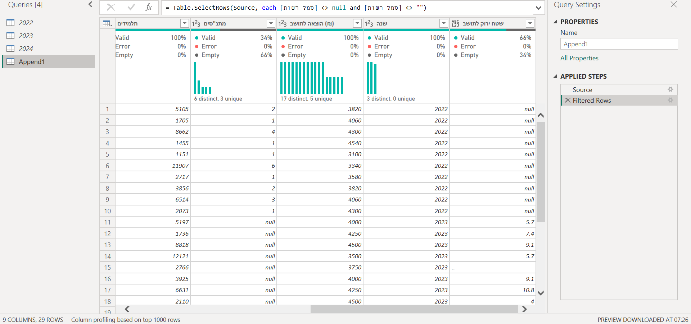
מה שנשאר במדרגות הוא רק מה שהחלטתן להשאיר: מתנ״סים ושטח ירוק.
למה לא להוסיף את השנה אחרי האיחוד? אחרי האיחוד כבר אי אפשר לדעת איזו שורה הגיעה מאיזה קובץ. השנה נכנסת לפני, בכל שאילתה לחוד.
2.6מה שהפרופיל לא יראה
בדקתן במקור שכל עמודה ״תקינה״ מודדת אותו דבר בכל השנים.
עמודה עם אותו שם בכל השנים תהיה מלאה ב־100%, וזה לא אומר שהיא אותו דבר. שנה אחת ממוצע של שלוש שנים, ושנה אחרת נתון שנתי. שנה אחת בשקלים, ושנה אחרת באלפי שקלים.
פאוור BI לא יתריע על זה. השם זהה, אז האיחוד ״מצליח״. רק קריאה של ההסבר במקור (מילון המשתנים, ההערות לטבלה) תגלה את זה. בקובצי התרגול בדקנו: ההוצאה לתושב בשקלים בכל השנים.
2.7השאילתות השנתיות לא נטענות לדוח
בדוח, בחלונית Data, יש טבלה אחת בלבד.
איך עושים
קליק ימני על 2022 בחלונית Queries ← מורידות את הסימון מ־Enable load.
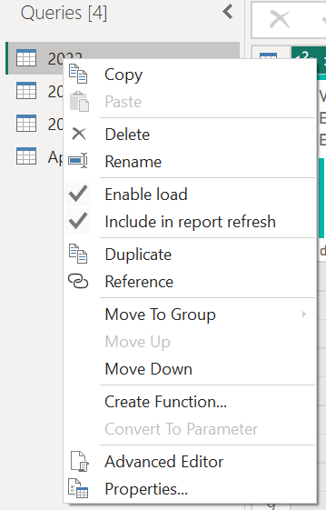
אותו דבר ב־2023 וב־2024. השמות שלהן נטויים עכשיו.
קליק על Append1. מימין, ב־Name: רשויות - כל השנים, ו־Enter.
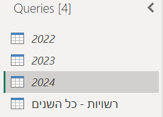
מה אמור להופיע?
אחרי Close & Apply, בחלונית Data בדוח: טבלה אחת, ״רשויות - כל השנים״.
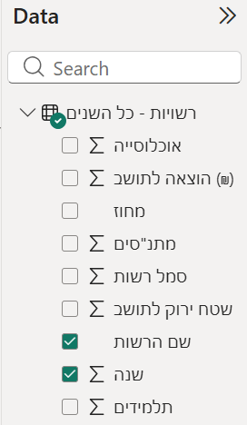
למה? בלי זה נטענות לדוח ארבע טבלאות, ואותם נתונים מופיעים פעמיים. השאילתות השנתיות ממשיכות לעבוד בשביל האיחוד. הן רק לא נטענות.
2.8מה נכנס לטבלת הטיוב
לכל דבר שמצאתן ותיקנתן יש שורה בטבלת הטיוב שלכן.
זה לא עוד מסמך. זו אותה טבלת טיוב שאתן כבר ממלאות, והיא נכנסת לפרק הטיוב בעבודה הכתובה. ככה היא נראית לקובצי התרגול:
טבלת הטיוב לדוגמה
איפה
מה ראיתי
מה עשיתי
למה
2024
שורת כותרת ושורה ריקה מעל שמות העמודות
Remove Top Rows, Use First Row as Headers
בלי זה אי אפשר לקרוא את הקובץ
איחוד
סמל רשות ריק ב־3%: שורת סה״כ של 2024
Remove Empty בסמל רשות
שורת סיכום מכפילה כל סכום
2022
״שם רשות״ 34% ו״שם הרשות״ 66%
שינוי שם ל״שם הרשות״
אותה עמודה, שם אחר
2022
״הוצאה לתושב״ 34% ו״הוצאה לתושב (₪)״ 66%
שינוי שם ל״הוצאה לתושב (₪)״
אותה עמודה. בדקנו במקור: שקלים בכל השנים
איחוד
מתנ״סים רק ב־2022, שטח ירוק רק ב־2023–2024
נשארות
השאלה צריכה אותן. null בהן = לא נמדד
כל שנה
אין עמודת שנה
Custom Column ״שנה״ בכל שאילתה
אחרי האיחוד אי אפשר לדעת מאיזו שנה השורה
ועוד שורות משלב 3, אחרי שתעברו עליו.
במסד שלכן, לפי מה שרואות:
בפרופיל של האיחוד
כנראה
איפה מתקנות
עמודה שאמורה להיות מלאה תמיד (מפתח, שם) ריקה בכמה אחוזים
שורת סיכום או כותרת שנכנסה כשורה
סינון על עמודת המפתח, באיחוד
שתי עמודות שמשלימות ל־100%, ומשמעותן זהה
אותה עמודה בשני שמות
שינוי שם בשאילתה השנתית
עמודה במדרגות, בלי בת זוג
נמדדה רק בחלק מהשנים
מחליטות לפי השאלה, וכותבות
הכול 100% ונראה תקין
אולי בכל זאת משמעות אחרת
רק קריאה במקור
עמודה שלא קשורה לשאלה
עוד עמודה להתאים, בלי סיבה
Remove Columns בכל שאילתה שנתית, לפני האיחוד
שלב 3 · בטבלה המאוחדת, פעם אחתערכים ושורות
מכאן עובדות רק ב״רשויות - כל השנים״. כל שלב כאן חל על שלוש השנים יחד.
3.1סוגים מחדש, ו־.. במקום מספר
כל העמודות במספרים בסוג מספר, ובלי שגיאות.
איך עושים
עוברות על האייקונים בכותרות. תלמידים ושטח ירוק לתושב הם ABC/123.
תלמידים ← Whole Number. שטח ירוק לתושב ← Decimal Number.
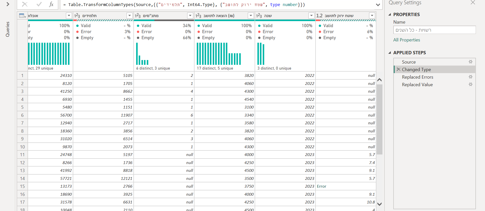
שלוש שגיאות: כל .. ו־- שהיו בקבצים.
כמו בשיעור 3: מסמנות את שתי העמודות ← Transform › Replace Values › Replace Errors ← null ← OK.
מה אמור להופיע?
Error 0% בכל העמודות. בתלמידים 28 ערכים ו־null אחד (נאות חרוב, 2024).
למה הסוג ״התקלקל״? ב־2022 תלמידים היא מספר. ב־2024 יש בה גם .., אז היא טקסט. אחרי האיחוד פאוור BI לא יודע להחליט, ונותן ABC/123. לכן קובעות סוגים שוב אחרי כל איחוד.
.. ו־- הם לא אפס. בלמ״ס ובאתרים ממשלתיים הם מסמנים ״אין נתון״, ״לא נמדד״ או ״מספר קטן מדי לפרסום״. מחפשות את ההסבר בהערות לטבלה, הופכות ל־null, וכותבות בטבלת הטיוב מה כל סימן אמר.
3.2אותה רשות, שני איותים
בפרופיל של שם הרשות 12 ערכים שונים, ולא 13.
איך עושים
מסמנות את שם הרשות ← Transform › Replace Values.
Value To Find: קרית שקד. Replace With: קריית שקד. OK.
איך יודעות שיש בכלל בעיה? משווים distinct של השם ל־distinct של הסמל. סמל 103 הופיע עם שני שמות. לכן מזהים רשות לפי הסמל, לא לפי השם.
3.3שורות שלא קיימות בכל השנים
יודעות כמה שנים יש לכל רשות, ומחליטות מה עושים עם מי שחסרה.
איך בודקות
Close & Apply.
בדוח: Matrix. מסמנות את שם הרשות, ואחר כך את שנה.
ב־Values מופיע Sum of שנה. החץ שלידו ← Count.
מה אמור להופיע?
שמונה רשויות עם 3, עמק ורדים עם 2, ועין ורד, מצפה ורד ונאות חרוב עם 1. בסך הכול 29.
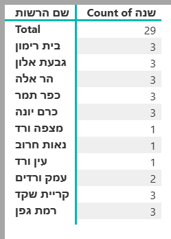
ומה מחליטות? לפי השאלה:
השאלה על כל שנה בנפרד (״איך נראו הרשויות ב־2024?״): משאירות הכול. כל שנה היא תמונה של עצמה.
השאלה על שינוי לאורך זמן (״באילו רשויות האוכלוסייה גדלה?״): רק רשויות שיש להן כל השנים. אחרת ״ממוצע 2022״ ו״ממוצע 2023״ מחושבים על רשויות שונות, וההשוואה מטעה.
רשות שאוחדה (עין ורד + מצפה ורד ← עמק ורדים): ברוב העבודות פשוט לא נכנסת להשוואה, וכותבות למה. אפשר גם לחבר את השתיים הישנות לרשות אחת, אבל זו עבודה נוספת, ושווה לעשות אותה רק אם השאלה צריכה אותן.
איך משאירות רק מי שיש לה את כל השנים? (Group By)
בפאוור קוורי: קליק ימני על רשויות - כל השנים ← Reference. Name: רשויות בכל השנים. כמו בשיעור 5, הסינון נעשה בעותק.
Home › Group By ← Advanced. מקבצות לפי סמל רשות.
שורה ראשונה: מספר שנים, Count Rows. Add aggregation. שורה שנייה: נתונים, All Rows.
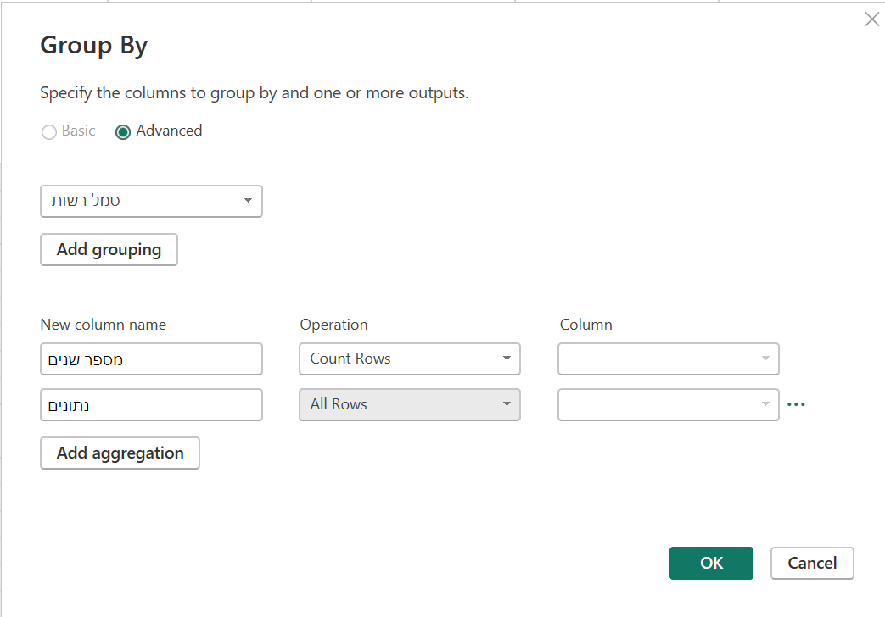
OK. 12 שורות, אחת לכל סמל, וליד כל אחת מספר השנים שלה.
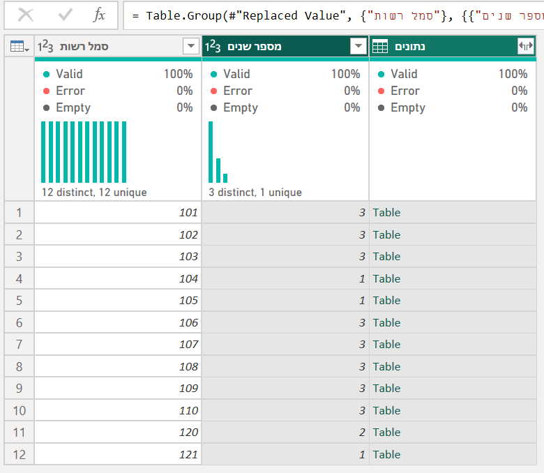
החץ הכפול בכותרת נתונים. מורידות את הסימון מסמל רשות (כבר יש) ומ־Use original column name as prefix. OK.
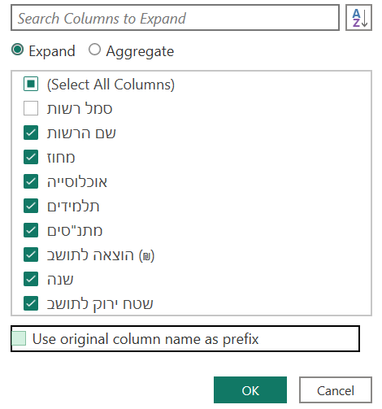
החץ בכותרת מספר שנים ← משאירות רק את 3.
מה אמור להופיע?24 שורות: 8 רשויות × 3 שנים.
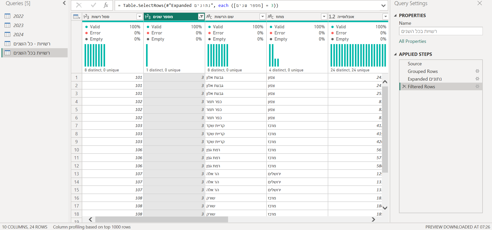
שלב 4 · י״ב · על המסד שלכןמה שונה אצלכן י״ב
המסד שלכן מאוחד לטבלה אחת, עם עמודת שנה, ולכל תיקון יש שורה בטבלת הטיוב.
אותם שלבים, 1 עד 3. מה שמשתנה הוא איפה הקושי. בחרו את הכרטיס שדומה למסד שלכן.
קובץ רחב, הרבה עמודות שמשתנות בין השנים
למשל קובץ נתוני רשויות: מאות עמודות על כל תחום, וכל שנה נוסף או יורד משהו.
קודם מצמצמות, אחר כך מאחדות. מחליטות על גושי עמודות שהשאלה צריכה (אוכלוסייה, חינוך, תקציב), ובכל שאילתה שנתית: Home › Choose Columns ומשאירות רק אותם. בלי זה, בפרופיל של האיחוד יהיו מאות עמודות, ואי אפשר למצוא בהן את המדרגות.
המפתח הוא הסמל. שם הרשות משתנה באיות. הסמל נשאר. בודקות ש־distinct של הסמל שווה לזה של השם.
שורות כותרת (1.1) בכל קובץ. בקבצים כאלה יש לפעמים כמה. שורות סה״כ, גם ״סה״כ מחוז״ באמצע, מסננות באיחוד לפי עמודת הסמל (2.2): שורה בלי סמל היא לא רשות.
סימני חוסר:.., -, x. קוראות מה כל אחד אומר בהערות לקובץ (3.1).
רשויות שאוחדו, פוצלו או נוספו: 3.3. כותבות בתיעוד כמה רשויות הוצאו מההשוואה, ולמה.
אותו מדד, ושמות העמודות מתחלפים כל שנה
למשל דוח בינלאומי שנתי: אותן מדינות ואותם מדדים, אבל כל שנה המדד נקרא קצת אחרת.
הזוגות הם כל העבודה. אחרי האיחוד יהיו הרבה עמודות במדרגות. מחפשות זוגות שמשלימים ל־100% (2.3), ובודקות בהגדרות של הדוח שזה אותו מדד. עמודה ״חדשה״ היא לפעמים ישנה בשם חדש.
קוראות את ההגדרה, לא רק את השם. ממוצע של שלוש שנים מול נתון שנתי, או סולם אחר: הפרופיל לא יראה את זה (2.6).
שמות המדינות: מדינות משנות שם (Turkey ← Turkiye) או מקבלות סימן (* בסוף השם). אחרי האיחוד בודקות במטריצה (3.3), ומאחדות ב־Replace Values.
מספר המדינות שונה בכל שנה. בשאלה על שינוי: רק מדינות שיש להן את כל השנים (3.3).
איזו שנה? בדוחות רבים ״דוח 2024״ מבוסס על סקרים מ־2023. מחליטות מה עמודת השנה אומרת, וכותבות.
שורות זבל: שורה בלי שם מדינה, או שורת הסבר בסוף. מסננות.
שתי שנים שחולקות רק מעט עמודות
למשל שני קבצי ״להיטים של השנה״ מאותו אתר, שכל אחד בנוי אחרת.
רק המשותפות (2.4, אפשרות ראשונה), אלא אם השאלה צריכה עמודה של שנה אחת.
שמות שונים לאותו דבר (2.3), גם כשהשם באנגלית שונה לגמרי. שתי עמודות של ״השמעות״ בשמות אחרים הן אותה עמודה.
אותו שם, משמעות אחרת: השמעות ״מאז שהשיר יצא״ הן מצטברות. שיר מ־2023 צבר עוד שנה של השמעות עד 2024. הפרופיל לא יראה את זה (2.6): כותבות.
אותו שיר בשתי השנים? עם Append הוא יופיע פעמיים, פעם בכל שנה, וזה נכון לשאלה ״מה מאפיין את הלהיטים של כל שנה״. לשאלה ״מה קרה לשיר מ־2023 ל־2024״ צריך Merge, ומדברות איתי.
מספרים כטקסט עם פסיקים (390,470,936) ותווים משובשים בשמות: בודקות אחרי האיחוד, כמו ב־3.1.
מה מגישות
טבלת הטיוב, עם שורה לכל דבר שמצאתן בפרופיל ולכל החלטה (2.8).
מספרים: שורות בכל קובץ, כמה שורות סיננתן ולמה, ושורות בטבלה המאוחדת. החשבון חייב להסתדר (בקובצי התרגול: 10 + 9 + 11 − 1 = 29).
שורות: כמה ישויות יש בכל השנים, כמה רק בחלק, ומה החלטתן.
חלופה: כל הקבצים מתיקייה
Get Data › Folder › Combine, ולמה לא כאן
כשיש עשרות קבצים במבנה זהה לגמרי, למשל קובץ לכל חודש מאותה מערכת, אפשר לאחד את כולם בפעולה אחת:
Get Data › Folder ← בוחרות תיקייה ← Combine & Transform Data.
פאוור BI בונה ״קובץ דוגמה״, מפעיל את אותם שלבים על כל קובץ, ומוסיף עמודה Source.Name עם שם הקובץ, ומשם אפשר לחלץ את השנה.
למה לא כשהשנים שונות? רשימת העמודות נלקחת מקובץ הדוגמה בלבד, בדרך כלל הראשון. עמודה שקיימת רק בקבצים אחרים נעלמת בשקט, בלי הודעה.
בקובצי התרגול, ״שטח ירוק לתושב״ (2023–2024) הייתה נעלמת, כי 2022 הוא הראשון. ושם שהשתנה היה הופך ל־null.
נתקעתי
אחרי Append יש עמודה כפולה, חצי ריקה
שם שלא שונה. בודקות בדיוק: רווח, סוגריים, אות גדולה באנגלית (Year ו־year הן שתי עמודות). מתקנות בשאילתה השנתית, והאיחוד מתעדכן לבד (2.3).
הכותרות הן Column1, Column2…
הכותרת האמיתית לא בשורה הראשונה. Remove Top Rows עד שהיא ראשונה, ואז Use First Row as Headers (1.1).
הסכום בדוח גדול פי שניים ממה שציפיתי
שתי אפשרויות. שורת סה״כ שנשארה באחד הקבצים (2.2), או שהשאילתות השנתיות נטענות לדוח, ובניתן את הגרף מאחת מהן (2.7).
בדוח כתוב Sum of שנה, ומספר כמו 58,667
פאוור BI סוכם כל מספר. שנה היא תווית, לא כמות. בחץ שליד השדה: Count לספירה, או Don't summarize כשהיא בציר.
האייקון של עמודה ABC/123 אחרי האיחוד
בכל שנה הסוג היה אחר. קובעות סוג ב״כל השנים״ (3.1).
נוספה לי שנה חדשה
שאילתה חדשה לשנה, עם אותם תיקוני מבנה, שמות ועמודת שנה. ב״כל השנים״: גלגל השיניים שליד Source ביומן ← מוסיפות אותה לרשימה.
יש לי שלב ״Reordered Columns״ שלא עשיתי
קליק על כותרת נרשם כגרירה. מוחקות את השלב ב־X.
בניווט (Navigator) מופיע גם Suggested Tables
פאוור BI מנחש איפה הטבלה בגיליון. לפעמים הוא צודק ולפעמים לא. כאן בוחרות את הגיליון עצמו, כדי לראות ולתקן את המבנה בעצמכן ולתעד את זה.